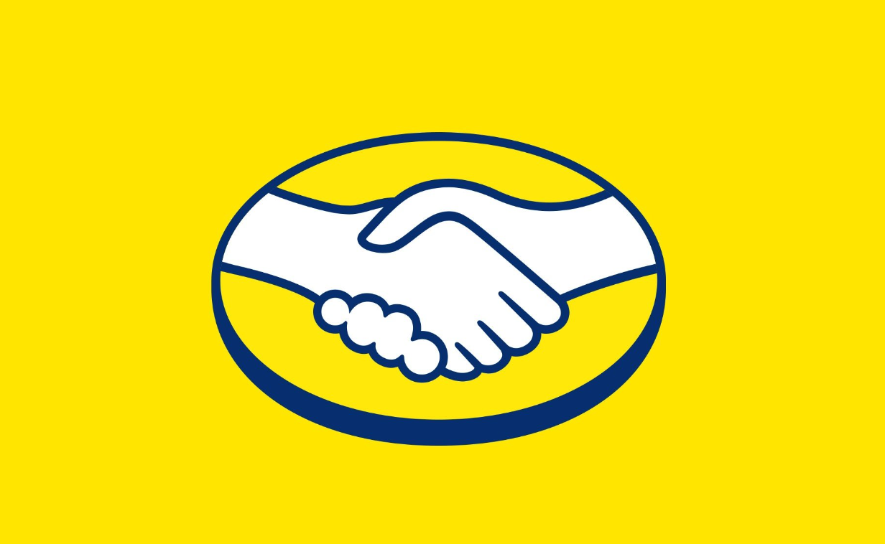
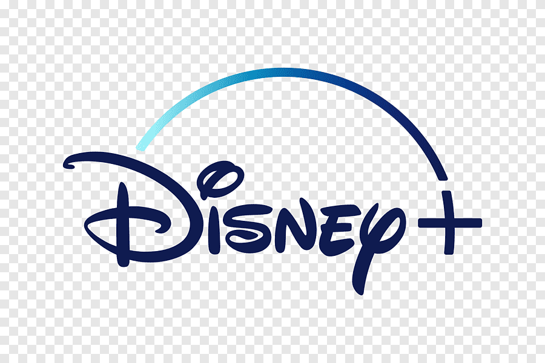
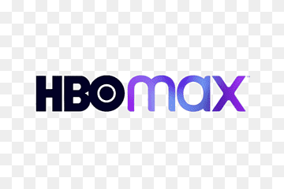
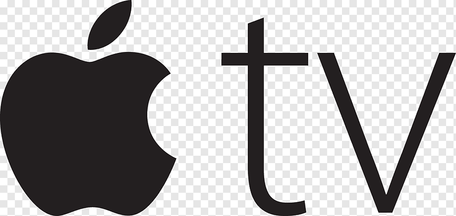
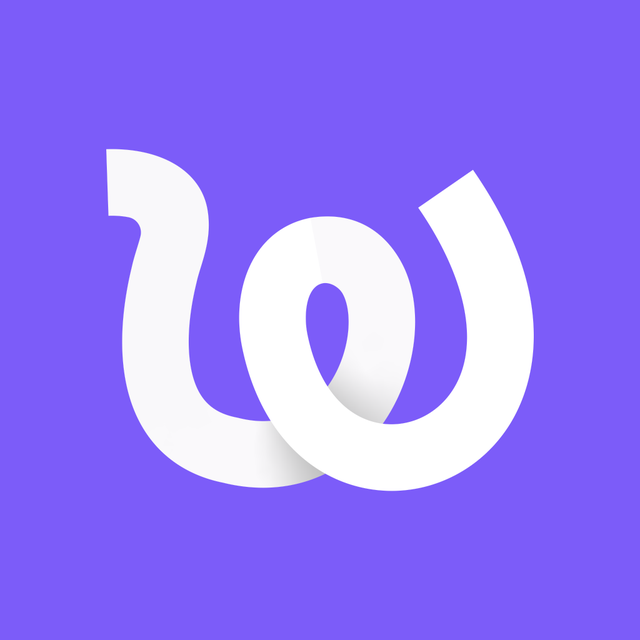

Bootcamp MeLi
Dic 2024 → Mar 2025

MeLi Mega — Brasil
Abr 2025 → Oct 2025



MeLi Mega — México
Oct 2025 → Feb 2026
Connectivity Core
Feb 2026 → hoy

¿Cuántos PRs mergeados realicé por proyecto a lo largo del tiempo?
Cada línea representa un repositorio distinto. Se puede ver cómo al principio toda la actividad se concentraba en un solo proyecto, y con el tiempo fui sumándome a nuevos equipos y desarrollos.